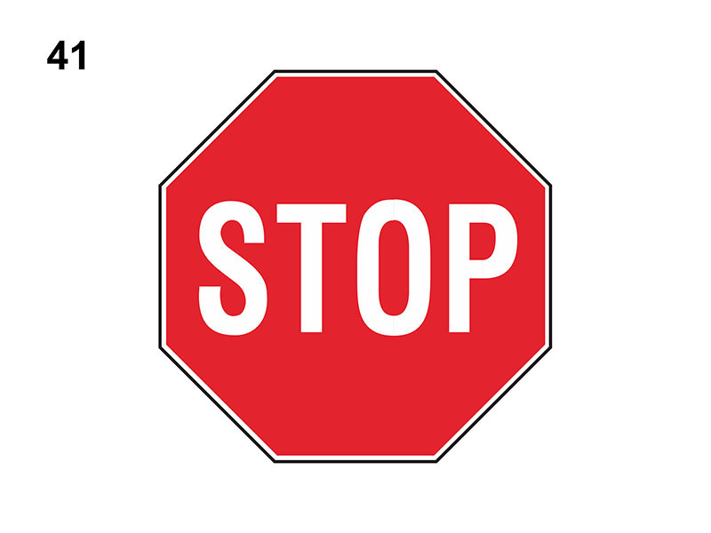

Fermarsi e dare la precedenza a destra ed a sinistra

E' un segnale di prescrizione (precedenza).
Obbliga a fermarsi in corrispondenza della striscia trasversale di arresto, anche se non c'è nessuno, e dare la precedenza ai veicoli provenienti sia da destra che da sinistra.
Si può trovare (sia fuori che dentro i centri abitati) ad esempio:
Può essere installato prima dell'incrocio entro 10 metri in città ed entro 25 metri fuori città.
Su strade extraurbane è preceduto dal segnale 'PREAVVISO DI STOP'.
Non è vero che preannuncia l'obbligo di fermarsi e di dare la precedenza nei sensi unici alternati.
Non è vero che obbliga ad arrestarsi ad un varco doganale o solo quando si incrociano altri veicoli (bisogna arrestarsi sempre, anche se non si vede nessuno).
Obbliga a fermarsi in corrispondenza della striscia trasversale di arresto, anche se non c'è nessuno, e dare la precedenza ai veicoli provenienti sia da destra che da sinistra.
Si può trovare (sia fuori che dentro i centri abitati) ad esempio:
- in genere, negli incroci con scarsa visibilità e particolare pericolosità
- in corrispondenza di un passaggio a livello
- all'incrocio con una strada con diritto di precedenza
- abbinato ad un semaforo, in tal caso vale quando il semaforo funziona a luce gialla lampeggiante
Può essere installato prima dell'incrocio entro 10 metri in città ed entro 25 metri fuori città.
Su strade extraurbane è preceduto dal segnale 'PREAVVISO DI STOP'.
Non è vero che preannuncia l'obbligo di fermarsi e di dare la precedenza nei sensi unici alternati.
Non è vero che obbliga ad arrestarsi ad un varco doganale o solo quando si incrociano altri veicoli (bisogna arrestarsi sempre, anche se non si vede nessuno).